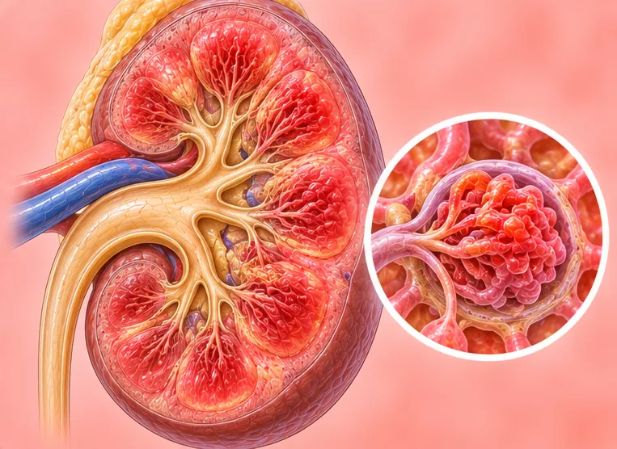

Dropped kidney (nephroptosis)
A kidney that sits lower in the body than normal when standing
What it is
The kidney moves down when a person stands up and goes back up when lying down. Many people have no signs; some feel a dragging ache in the side.
- Kidney, side of the waist
- Slim women more often
- Dragging ache in the side
- Which doctor
- Family doctor; a kidney doctor or urine doctor (urologist) if needed
- Common in
- Often slim, tall people, more in women; after weight loss
- Contagious
- No
- Course
- Many people have no problem for years; a doctor can advise if there are signs
Common signs
Lower back painLumbago 
Dragging ache in the lower bellyPelvic pain 
Burning when passing urineDysuria Needing the toilet oftenUrinary frequency
Why it happens

The cause is not fully knownIdiopathic
Other causes
- Loose tissue around the kidney that holds it less firmly
- Being very slim or losing weight quickly
- Weak belly and back muscles, or after childbirth
See a doctor first if
- Sudden strong pain in the side with vomiting: go to hospital now
- Fever or shaking chills with side pain
- Blood in the urine
- Very little urine, or cannot pass urine
- Ache that keeps getting worse or is not helped by rest
If any apply, please see a doctor before a session.
This page is general information. Please keep taking your normal medicine and keep seeing your doctor.
Keep taking your normal medicine and keep seeing your doctor. Our session is a gentle support and does not replace medical care.
Looking after yourself

Rest wellRest 
Stay active every dayRegular physical activity Drink enough waterAdequate hydration
More ways to look after yourself
- Keep a healthy body weight and eat regular meals
Tell your therapist
- A kidney or liver condition
- Recent back injury or surgery
- Pregnancy
- Fever or an active infection
Your therapist will go through this with you before starting.
Questions and answers
What is Dropped kidney (nephroptosis)?
A kidney that sits lower in the body than normal when standing. The kidney moves down when a person stands up and goes back up when lying down. Many people have no signs; some feel a dragging ache in the side.
What are the common signs of Dropped kidney (nephroptosis)?
Lower back pain · Dragging ache in the lower belly · Burning when passing urine · Needing the toilet often
Why does Dropped kidney (nephroptosis) happen?
The cause is not fully known
How can I look after myself with Dropped kidney (nephroptosis)?
Rest well · Stay active every day · Drink enough water
Can an AI Body Master session help with Dropped kidney (nephroptosis)?
A session is gentle, needle-free meridian support for your wellbeing. It does not treat or cure Dropped kidney (nephroptosis) and never replaces your medicine or your doctor. Tell your therapist about it before the session starts.
Related conditions
References: General information based on public health sources such as Mayo Clinic, NHS, Cleveland Clinic and NCBI StatPearls.
Page updated: 2026-11-01